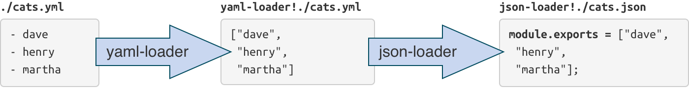

class: cover .cover-content[ # Bundler Pipeline talk about how module bundler works ] --- # What is module bundling <br /> ### On a high level, module bundling is simply the process of stitching together a group of modules (and their dependencies) into a single file (or group of files) in the correct order. --- # Why -- <br /> ## Problems: .trigger-time.trigger-time--2em[ - hard to balance between modularity and http requests - plenty of tools in src-dest lifecycle - low productivity because of many repeated works ] --- # What we want .trigger-time.trigger-time--2em[ - Modularity & Performance, mainly for separation of concerns - Integration, aggregate all dirty things - Automation, DRY - Fast ] --- # Bundler Solutions .trigger-time.trigger-time--2em[ - Webpack - Browserify - JSpm - FIS - ... ] --- # Webpack <br /> <br /> <div style="margin: -3em; background: white;"> <img src="what-is-webpack.png" style="width: 40em;" /> </div> --- # Design .trigger-time.trigger-time--2em[ - all in one - based on a plugin system - use loader to compile source code - configuration driven, like Grunt ] --- <div style="margin: -3em;"> </div> --- # Pipeline -- .code-block.code-block--small[ ```javascript ["run-async", "watch-run-async", "compilation", "normal-module-factory", "context-module-factory", "compile", "make-parallel", "after-compile-async", "emit-async", "after-emit-async", "done", "failed", "invalid", "after-plugins", "after-resolvers", "normal-module-loader", "seal", "optimize", "optimize-tree-async", "optimize-modules", "after-optimize-modules", "optimize-chunks", "after-optimize-chunks", "revive-modules", "optimize-module-order", "optimize-module-ids", "after-optimize-module-ids", "record-modules", "revive-chunks", "optimize-chunk-order", "optimize-chunk-ids", "after-optimize-chunk-ids", "record-chunks", "before-hash", "after-hash", "before-chunk-assets", "additional-chunk-assets", "record", "optimize-chunk-assets-async", "after-optimize-chunk-assets", "optimize-assets-async", "after-optimize-assets", "build-module", "succeed-module", "failed-module", "module-asset", "chunk-asset"] ``` ] -- ### hard to understand --- # Pipeline .trigger-time.trigger-time--2em[ - load - seal - optimize - chunk - hash - restore ] --- # Loader ### Loaders are transformations that are applied on a resource file of your app. They are functions (running in node.js) that take the source of a resource file as the parameter and return the new source. -- .code-block[ ```javascript // single loader require('babel!./App.jsx'); // multi loaders, transformed from right to left require('json!yaml!./cats.yml'); ``` ] <div>  </div> --- # Plugin ### Plugins expose the full potential of the Webpack engine to third-party developers. Using staged build callbacks, developers can introduce their own behaviors into the Webpack build process. -- .code-block.code-block--small[ ```javascript function WebpackMd5Hash () {} WebpackMd5Hash.prototype.apply = (compiler) => { compiler.plugin("compilation", (compilation) => { compilation.plugin("chunk-hash", (chunk, chunkHash) => { const source = chunk.modules.sort(compareModules) .map(getModuleSource) .reduce(concatenateSource, ''); const chunk_hash = md5(source); chunkHash.digest = () => chunk_hash; }); }); }; ``` ] --- # HMR <div style="margin: 0 -3em; background: white"> </div> --- # Code Splitting ### Code Splitting is not just about extracting common code into a shared chunk. The more notable feature is that Code Splitting can be used to split code into an on demand loaded chunk. .code-block[ ```javascript const a = require("a"); const b = require("b"); require.ensure(["c"], (require) => { require("b").xyz(); const d = require("d"); }); ``` ] --- # Problem ### too COMPLEX to find the right configuration <div> <img src="magic.gif" style="width: 20em;" /> </div> --- # Browserify <br /> <br /> <div> <img src="wizard_hat_blue.png" style="width: 15em;" /> </div> <div> <img src="browserify.png" style="width: 20em;" /> </div> --- # Design .trigger-time.trigger-time--2em[ - based on Stream - Unix on browser - code driven, like Gulp ] --- # Pipeline .code-block.code-block--small[ ```javascript var pipeline = splicer.obj([ 'record', [ this._recorder() ], 'deps', [ this._mdeps ], 'json', [ this._json() ], 'unbom', [ this._unbom() ], 'unshebang', [ this._unshebang() ], 'syntax', [ this._syntax() ], 'sort', [ depsSort(dopts) ], 'dedupe', [ this._dedupe() ], 'label', [ this._label(opts) ], 'emit-deps', [ this._emitDeps() ], 'debug', [ this._debug(opts) ], 'pack', [ this._bpack ], 'wrap', [] ]); ``` ] --- # With Gulp .code-block.code-block--small[ ```javascript const stream = browserify().bundle() .pipe(addsrc(standaloneFiles, { base: clientDir })) .pipe(dedupe()) .pipe(hold()) .pipe(gulp.dest(staticDir)) // stamp version .pipe(imagemin()) .pipe(stampImageVersion) .pipe(hold()) .pipe(rewriteStyleUrl) .pipe(stampOtherVersion) .pipe(gulp.dest(staticDir)) // compress .pipe(stampMin) .pipe(cssmin()) .pipe(filterScript) .pipe(uglify()) .pipe(filterScript.restore) .pipe(gulp.dest(staticDir)); ``` ] --- # References .trigger-time.trigger-time--2em[ - [webpack](https://webpack.github.io/) - [Exploring WebPack](https://codepen.io/reverland/post/exploring-webpack) - [browserify](https://browserify.org/) - [Choosing the correct packaging tool for React](https://christianalfoni.github.io/javascript/2014/08/29/choosing-the-correct-packaging-tool-for-react-js.html) ] --- name: last-page # Thanks